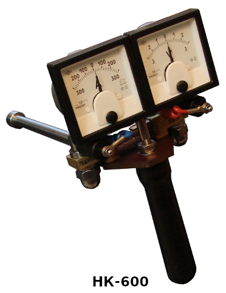
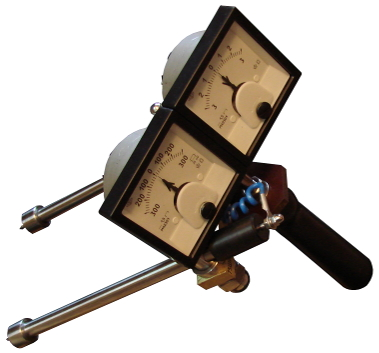
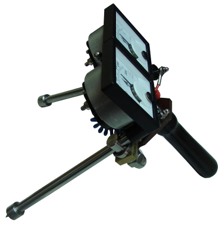
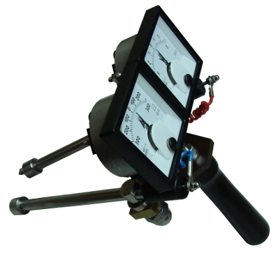
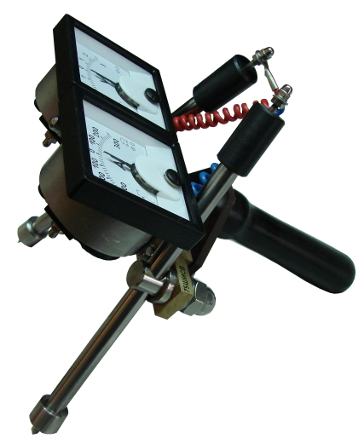
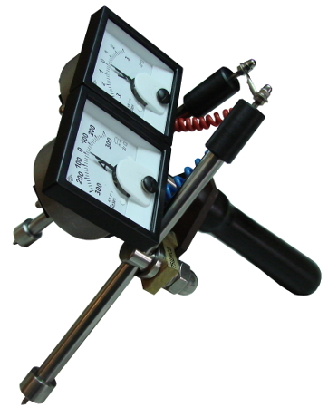
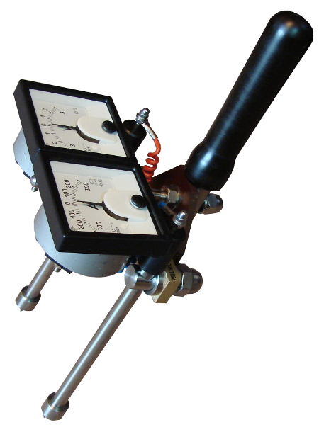
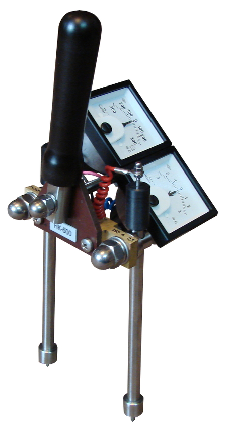

Для перехода щелкните по ссылке на желтом фоне:
Вилки нагрузочные НК-600 и НК-600У (с уменьшенным блоком приборов) для проверки кислотных аккумуляторов
НАЗНАЧЕНИЕ
Примечание:
Здесь и далее по тексту под аккумулятором понимается одиночная
свинцово-кислотная аккумуляторная ячейка (банка) номинальным напряжением 2,0 В.
Вилки нагрузочные НК-600 и НК-600У предназначены для проверки работоспособности кислотных свинцовых аккумуляторов напряжением 2,0 В, имеющих медные луженые выводы и перемычки, током нагрузки от 166 до 300 А, при напряжении испытуемого аккумулятора под нагрузкой 1,8 В. Вилки нагрузочные НК-600 и НК-600У применяются при эксплуатации и ремонте только кислотных аккумуляторов.
Принцип контроля технического состояния кислотного аккумулятора нагрузочной вилкой НК-600 (НК-600У)заключается в замере напряжения и тока отдаваемого аккумулятором при подключении к нему нагрузочного сопротивления, которым является конструкция вилки.
Кислотные аккумуляторы могут эксплуатироваться в следующих режимах:
– режим длительного разряда – когда разряд идет
малыми токами длительное время;
- режим стартерный – когда разряд идет большими
токами, но непродолжительное время.
Поэтому при выборе нагрузочного тока для контроля аккумулятора нагрузочными вилками, необходимо учитывать режим работы аккумулятора.В общем случае желательно контролировать аккумулятор током наиболее близким к максимальному разрядному току установленному заводом-изготовителем данного аккумулятора.
Контроль кислотных аккумуляторов, работающих в стартерных режимах, максимальным током, допускаемым изготовителем, затруднен из-за больших величин этих токов. Поэтому, как показывает опыт эксплуатации, вполне достаточно контролировать такие аккумуляторы током I = (1...1,5) Сном.
Вилки нагрузочные НК-600 (НК-600У) предназначены для контроля кислотных аккумуляторов, следующих емкостей:
- емкостью от 830 до 1500 Ач – для аккумуляторов,завод производитель, или эксплуатирующая организация которых допускает,
или устанавливает для них 5 – часовой режим разряд;
- емкостью от 332 до 600 Ач – для аккумуляторов,
завод производитель, или эксплуатирующая организация которых допускает, или устанавливает для них 2 – часовой режим разряда;
- емкостью от 166 до 300 Ач – для аккумуляторов, завод производитель, или эксплуатирующая организация которых допускает,
или устанавливает для них 1 – часовой режим разряда.
Условия эксплуатации вилки нагрузочной НК-600 (НК-600У): температура от минус 40 до плюс 50 градусов Цельсия (°С), относительная влажность 95 % при температуре плюс 35 °С.
С помощью нагрузочной вилки НК-600 (НК-600У) можно измерить:
- напряжение аккумулятора без нагрузки (э.д.с. аккумулятора);
- напряжение и ток аккумулятора под нагрузкой. При этом имеется возможность выбора пользователем величины
тока нагрузки в зависимости от требований предъявляемых к аккумулятору.
Нагрузочная вилка, модели НК-600 (НК-600У), обеспечивает плавно настраиваемый ток разряда. При этом необходимо учитывать, что вследствие малого сопротивления нагрузочной цепи вилки, ток нагрузки сильно зависит от напряжения аккумулятора под нагрузкой.
Преимущества вилок НК-600 (НК-600У):
1. Возможность замера напряжения
испытуемого аккумулятора без нагрузки (э.д.с. аккумулятора);
2. Возможность бесступенчатой настройки тока нагрузки;
3. Одновременный замер тока и напряжения аккумулятора под нагрузкой;
4. Возможность настройки вилки на размер между осями выводов аккумулятора;
6. Поворотный блок приборов дает возможность работы с вилкой в труднодоступных местах.
ТЕХНИЧЕСКИЕ ХАРАКТЕРИСТИКИ ВИЛКИ НК-600 (НК-600У)
1.Тип - переносной
2. Номинальное напряжение проверяемого аккумулятора 2,0 В.
3. Сопротивление вилки плавно
регулируемое от: - максимального (0,005±0,002) Ом до минимального
(0,002±0,002) Ом. Сопротивление вилки, в сумме с переходным
сопротивлением "токовые наконечники вилки – выводы аккумулятора",
обеспечивают нагрузочный ток исправного, имеющего не менее 90 %
паспортной емкости, кислотного аккумулятора при его напряжении 1,8 В:
- в положении «Минимальный ток» - (166±50) А;
- в положении «Максимальный ток» - до 300 А
Соответственно. вилка обеспечивает следующие нагрузочные токи при напряжении испытуемого аккумулятора 2,0 В:
- в положении «Минимальный ток» - (184±56) А;
- в положении «Максимальный ток» - до 300 А.
4. Измерительные приборы:
|
Наименование прибора
|
НК-600
|
НК-600У
|
|
- вольтметр с пределами измерений 3-0-3 В, класса точности
|
1,5
|
2,5
|
| - амперметр с пределами измерений 300-0-300 А, класа точности |
1,5
|
2,5
|
6.Основные размеры вилки в рабочем положении:
|
Наименование прибора
|
НК-600
|
НК-600У
|
|
Высота вилки, мм |
211
|
211
|
| Длина от конца ручки до края блока приборов, мм |
228
|
205
|
|
Ширина вилки, мм |
123
|
105
|
| Расстояние между осями ножек, мм (регулируется от 30 до 120 мм) |
85+-5
|
85+-5
|
| Ориентировочная масса вилки, кг |
0,8
|
0,7
|
Скачать чертеж НК-600 .................... Скачать Руководство по эксплуатации НК-600
Скачать чертеж НК-600У ....................... Скачать Руководство по эксплуатации НК-600У
МЕТРОЛОГИЧЕСКОЕ ОБЕСПЕЧЕНИЕ
Измерительные приборы нагрузочной вилки НК-600 - вольтметр М42301, амперметр М42301, шунт измерительный 75ШИСВ. Внесены в реестры
средств измерений России, Беларуси и Казахстана.
Измерительные приборы нагрузочной вилки НК-600У - вольтметр М42303, амперметр М42303, шунт измерительный 75ШИСВ. Внесены в реестры
средств измерений России, Беларуси и Казахстана.
Сертификаты и Свидетельства об утверждении средств измерений можно посмотреть здесь: Смотреть Сертификат.
Нагрузочная вилка не является средством измерений - это
испытательное оборудование. Обязательной сертификации в РФ не подлежит
- имеется отказное письмо ВНИИСа № 101-КС/235 от 31.03.2021г.
Все нагрузочные вилки "ИнтерБалт"
поставляются с первичной метрологической аттестацией Производителем, согласно ГОСТ Р 8.568-2017 "Государственная систем обеспечения единства
измерений. Аттестация испытательного оборудования. Основные положения."
УСТРОЙСТВО ВИЛКИ НК-600 (НК-600У)
Нагрузочная вилка НК-600 (НК-600У) состоит из:
1.Блок приборов включает вольтметр и амперметр. Блок приборов может поворачиваться относительно оси на 90 градусов – для обеспечения удобства работы в труднодоступных местах



2.Измерительных ножек – левой и правой. Ножки могут поворачиваться - для установки на размер между выводами аккумулятора.


3. Регулировка нагрузочного тока осуществляется перемещением измерительного шунта по ножкам


5. Опция № 1. Поставляется за отдельную плату см. Цены. Дает возможность установить ручку вертикально для удобства работы в ограниченном пространстве, особено где имеет место ограничение по высоте (в подвагонном аккумуляторном ящике и т. п.).
6. Вилка нагрузочная НК-600 с ручкой установленной вертикально (использование Опции №1 - поставляется за отдельную. плату):


ВИДЕОРОЛИК ПО РАБОТЕ С ВИЛКОЙ НК-600
Требуемый нагрузочный ток вилки настраивается по заведомо исправному и полностью заряженному аккумулятору путем изменения вылета измерительных ножек.
В процессе испытания производится замер напряжения испытуемого аккумулятора без нагрузки (э.д.с. аккумулятора) – вилку установить измерительными ножками на выводы аккумулятора и, не нажимая на ручку (не допуская контакта токовых наконечников с выводами аккумулятора), снять показания вольтметра. Напряжение исправного аккумулятора без нагрузки должно быть в пределах от 1,8 до 2,2 В. При этом напряжение 1,8 В и ниже соответствует полностью разряженному или неисправному аккумулятору.
После этого произвести замер напряжения аккумулятора под нагрузкой - нажать на ручку вилки и привести токовые наконечники в контакт с выводами аккумулятора. Снять показания приборов. Вольтметр должен показывать напряжение не мене 1,8 В в течение не более 5 секунд, а амперметр - ток отдаваемый аккумулятором. По величине напряжения и тока оценить состояние аккумулятора. Напряжение 1,8 В и менее, при подключенной испытательной нагрузке, свидетельствует о том, что аккумулятор либо разряжен, либо неисправен.
Внимание!
1. Вилка раcчитана на максимальный ток 300 А. При настройке нагрузочной вилки не превышайте указанный ток.
2. Осторожно! При контроле аккумуляторов током 250...300 А ножки вилки сильно разогреваются.
Ваши замечания, предложения и пожелания по конструкции или эксплуатации вилки Вы можете отправить на электронную почту interbalt39@gmail.com.
Для перехода щелкните по ссылке на желтом фоне: